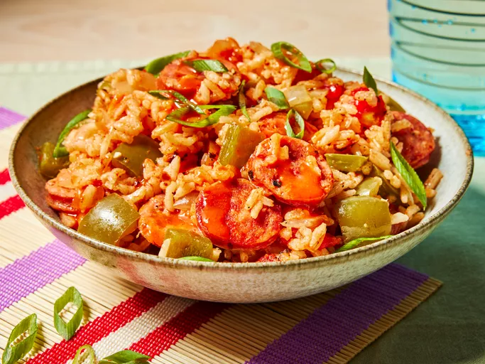

HOME
One Pot Sausage and Peppers Rice Cooker

Photo by Dotdash Meredith Food Studios
Description
The humble rice cooker is finally getting the recognition it deserves for being the fantastic kitchen workhorse that it is. This may come as a surprise, but even though it’s called a rice cooker, it doesn’t mean it only cooks rice. In fact, you can make an entire meal in your rice cooker, and some of them, like the KitchenAid rice and grain cooker, go so far as to cook beans, too. Cooking with this appliance is really just as easy as any slow cooker meal.
If you're looking to try an easy dump meal in your rice cooker, this flavorful dish with sausage, peppers, and rice is the perfect weeknight option.
Ingredients
- 3/4 cup uncooked long-grain white rice
- 3/4 cup chicken broth
- 3/4 cup canned fire-roasted diced tomatoes (from 1 [ 14.5-oz.] can)
- 2 medium garlic cloves, finely chopped (about 2 tsp.)
- 2 teaspoons Creole seasoning (such as Tony Chachere’s)
- 1/4 teaspoon black pepper
- 1/4 teaspoon cayenne pepper (optional)
- 1 cup chopped green bell pepper (from 1 small 7 oz. pepper)
- 1/3 cup chopped white onion (from 1 small 6 oz. white onion)
- 6 ounces andouille sausage, sliced into 1/4-inch-thick coins (about 1 1/4 cups)
- Sliced scallions
Steps
- Gather all ingredients.
- Rinse rice under cold running water until water runs clear, about 1 minute. Drain well and transfer to bowl of a rice cooker.
- Stir in broth, tomatoes, garlic, Creole seasoning, pepper, and cayenne (if using).
- Layer chopped bell pepper and onion on top, then place sliced sausage on top.
- Place rice cooker bowl in rice cooker, switch rice cooker on, and cook according to manufacturer's directions until rice cooker switches itself off.
- Carefully remove bowl from rice cooker, fluff rice with a fork and stir all ingredients together.
- Cover bowl with a lid or plate and set aside to steam for 5 minutes.
- Divide rice mixture between two bowls and garnish with sliced scallions.